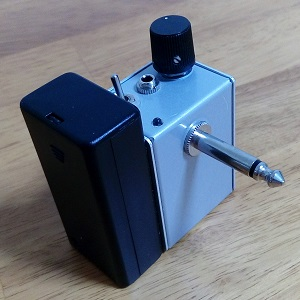

ヘッドフォンアンプその3小型化
2016年07月01日 カテゴリー：ヘッドフォンアンプ・その他アンプ

以前製作したヘッドフォンアンプその3を小型化しました。ラインアウトを省き、電池ボックスは外付けにしました。ケースはタカチMB-M1（3cm×4cm×5.5cm）です。フォンプラグはプラスチックカバーのものを切って取り付けました。パネル取り付けタイプのフォンプラグは存在しないみたいです。
その他いろいろ変更しようとしていたんですが、結局元の回路のままになりました。一応以下に失敗を記載しておきます。
◆レールスプリッタ回路を利用
オーディオ用で有名なChu Moyヘッドホンアンプではレールスプリッタ回路が使われており、出力カップリングコンデンサがありません。同様の回路を組んでみましたが、音が歪むようになってしまいました。出力カップリングコンデンサがなければかなりスペースが節約できそうだったのですが……
◆単4形充電式ニッケル水素電池2本（2.4V）を9Vへ昇圧
aitendo 大電流出力昇圧モジュール[M6285Y]というものを使って昇圧を試みました。スイッチング周波数は1.2MHzらしいですが、結構なノイズが入ってしまいました。ノイズ除去もいろいろやってみましたがダメみたいです。入力電圧が低すぎるのだと思います。2倍程度の昇圧ならなんとかなるかもしれません。